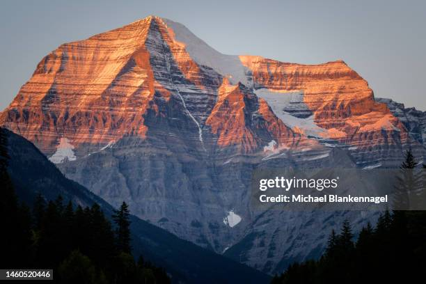
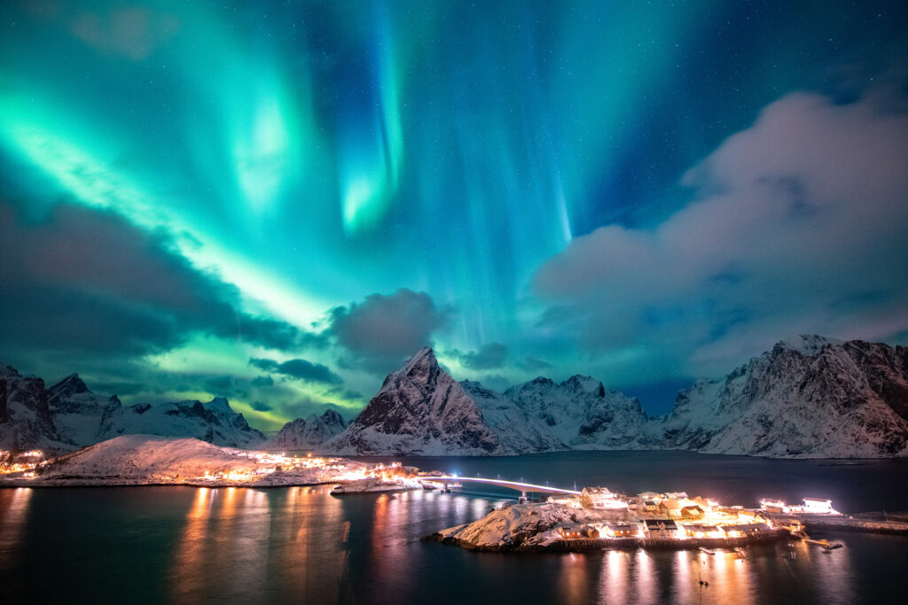
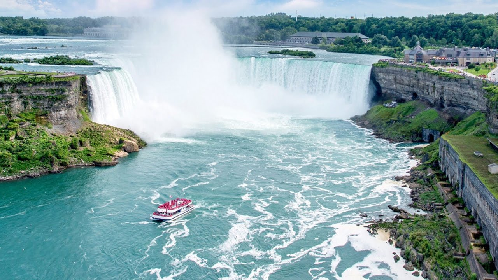
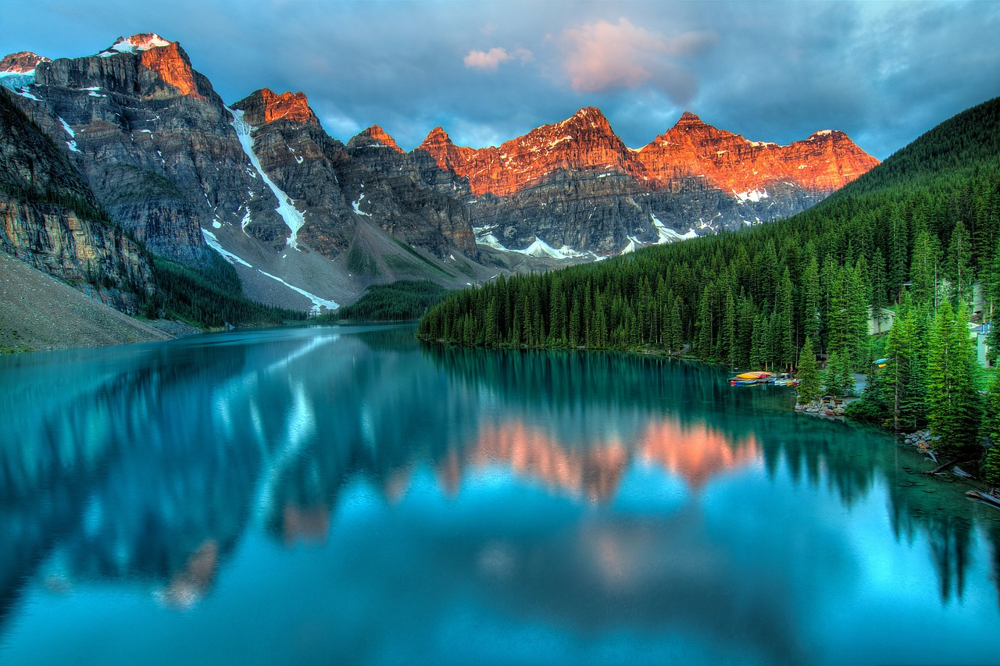

Canadá e suas belezas Naturais
Monte Robson: Um Gigante da Natureza
O Monte Robson é o pico mais alto das Montanhas Rochosas canadenses, com uma altitude impressionante de
3.954 metros. Localizado na província de Colúmbia Britânica, dentro do Parque Provincial Mount Robson,
ele faz parte do Patrimônio Mundial das Montanhas Rochosas Canadenses, designado pela UNESCO.
Considerado um ícone das paisagens montanhosas do Canadá, o Monte Robson é conhecido por sua grandeza,
forma imponente e pela beleza natural que o cerca.
O Parque Provincial Mount Robson, onde o Monte Robson está localizado, é conhecido por sua
biodiversidade. A área é o lar de diversas espécies de animais, incluindo ursos-pardos e ursos-negros,
alces, veados, caribus, e cabras-das-montanhas. Os caminhantes e alpinistas precisam estar cientes da
presença de grandes predadores, como ursos, e seguir as práticas recomendadas de segurança, como
carregar sprays de pimenta e manter uma distância segura da vida selvagem.
A vegetação também é diversificada, com florestas densas de piceas, abetos e pinheiros cobrindo as áreas
mais baixas da montanha. À medida que se sobe, a vegetação vai diminuindo, e a área alpina é composta
principalmente por tundra e campos rochosos. No verão, os campos alpinos florescem com uma variedade de
flores silvestres, adicionando cor às paisagens montanhosas.
O Monte Robson tem grande importância para os povos indígenas da região, especialmente para as Primeiras
Nações da Colúmbia Britânica. O nome original da montanha em várias línguas indígenas reflete seu
respeito e reverência pela montanha como um lugar sagrado. Embora o nome "Robson" tenha sido dado em
homenagem ao comerciante de peles Colin Robertson, muitos nativos ainda se referem à montanha por seus
nomes tradicionais.
O Monte Robson, devido à sua majestade e à beleza circundante, é um local muito procurado por fotógrafos
de natureza. O pico, muitas vezes coberto por neve e cercado de nuvens, oferece imagens espetaculares em
qualquer época do ano. Os pontos de vista ao longo da rodovia e das trilhas proporcionam oportunidades
para capturar a imensidão da montanha, especialmente ao amanhecer ou no final da tarde, quando a luz
suave realça os detalhes da face rochosa e das geleiras. Combinando aventura, beleza natural e um cenário montanhoso inigualável, o Monte Robson é
verdadeiramente um dos tesouros das Montanhas Rochosas canadenses.
Aurora Boreal
A aurora boreal, ou "luzes do norte", é um dos espetáculos naturais mais fascinantes e místicos do
planeta, e o Canadá é um dos melhores lugares do mundo para presenciar esse fenômeno. A aurora é visível
principalmente nas regiões setentrionais do país, incluindo Yukon, os Territórios do Noroeste, e o
território de Nunavut, além de algumas áreas mais ao sul em períodos de alta atividade solar, como no
norte de Alberta, Manitoba e Saskatchewan.
A aurora boreal é um fenômeno natural causado pela interação entre partículas carregadas do sol (vento
solar) e a atmosfera da Terra. Quando essas partículas atingem o campo magnético da Terra, são
direcionadas para os polos, onde interagem com gases como oxigênio e nitrogênio. Essa interação resulta
em luzes de várias cores, com tons de verde, rosa, vermelho, roxo e azul, que dançam no céu em padrões
ondulantes e pulsantes. A cor mais comum da aurora é o verde, causado pelo oxigênio a cerca de 100 km de
altitude, mas cores mais raras, como o vermelho e o violeta, também podem ser vistas em grandes
altitudes ou durante eventos de maior intensidade.
A melhor época para ver a aurora boreal no Canadá é durante os meses de inverno, de outubro a março,
quando as noites são mais longas e escuras. Durante o verão, a luz do dia pode durar até 24 horas nas
regiões mais ao norte, dificultando a observação. A visibilidade também depende das condições
climáticas, sendo preferível um céu limpo e sem nuvens para uma visualização clara. O outono e o inverno
são as épocas em que as partículas solares atingem a atmosfera da Terra com maior intensidade, tornando
o fenômeno mais frequente.
A aurora boreal sempre teve um significado cultural profundo para os povos indígenas do norte do Canadá.
Para algumas nações, como os Inuítes e os Dene, a aurora era vista como um sinal espiritual, conectando
o mundo físico ao mundo dos espíritos. Algumas lendas descrevem a aurora como sendo a manifestação dos
espíritos de seus ancestrais, que estão jogando bola no céu, enquanto outras acreditam que as luzes
representam a energia dos animais e seres vivos. Até hoje, o fenômeno é envolto em mitos e reverência
espiritual.
Devido à popularidade da aurora boreal, muitas empresas de turismo no norte do Canadá oferecem pacotes
especializados para observação das luzes. Além de serem um deleite visual, a aurora boreal oferece uma
oportunidade incrível para a fotografia de paisagens. Para capturar a beleza das luzes, os fotógrafos
geralmente utilizam câmeras com exposições longas, permitindo que as luzes sejam registradas em todo o
seu esplendor.
O Canadá, com seus vastos espaços abertos e céus noturnos sem poluição, oferece o ambiente perfeito para
quem deseja experimentar o poder e a beleza da aurora boreal. É um fenômeno que deixa qualquer visitante
impressionado, proporcionando memórias para toda a vida.
Cataratas do Niágara
As Cataratas do Niágara são uma das atrações naturais mais conhecidas e impressionantes do mundo,
localizadas na fronteira entre o estado de Nova York (EUA) e a província de Ontário (Canadá). Esse
conjunto de quedas d'água é famoso por seu volume e pela força imensa com que a água cai, sendo um
espetáculo que atrai milhões de visitantes todos os anos. As cataratas são formadas por três quedas
principais: a Catarata Canadense (ou Horseshoe Falls), a Catarata Americana (American Falls) e a
Catarata Véu de Noiva (Bridal Veil Falls).
Catarata Canadense (Horseshoe Falls) A Horseshoe Falls é a maior e mais famosa das três quedas,
localizada majoritariamente no lado canadense. Seu nome vem de sua forma de ferradura, com um arco
curvado perfeito que se estende por cerca
de 670 metros de largura e tem uma altura de aproximadamente 57 metros. Mais de 90% do volume total de
água que passa pelas Cataratas do Niágara cai por aqui, com cerca de 2.400 metros cúbicos de água por
segundo despencando pela borda em um fluxo contínuo e poderoso. Experiência visual: A Horseshoe Falls é
uma visão impressionante de qualquer ângulo. A neblina constante
que sobe da base da queda pode ser vista a quilômetros de distância, muitas vezes criando um arco-íris
em dias ensolarados. A força da água ao cair cria um estrondo contínuo, enchendo o ambiente com uma
energia vibrante. A neblina e o som ensurdecedor da água tornam o cenário ainda mais dramático,
especialmente durante a primavera e o verão, quando o fluxo de água atinge seu pico.
Catarata Americana (American Falls) A American Falls está localizada inteiramente do lado americano, e
apesar de ser menor em volume em
comparação à Horseshoe Falls, ainda é uma visão impressionante. Ela tem cerca de 290 metros de largura e
uma queda de 34 a 51 metros, dependendo da presença de rochas na base. A água que cai pela American
Falls percorre o Rio Niágara, vindo do Lago Erie, e tem um fluxo mais fragmentado devido às formações
rochosas, o que a torna distinta em sua aparência.
Formação rochosa: Ao contrário da queda mais suave e curvilínea da Horseshoe Falls, a American Falls tem
uma queda abrupta e irregular, onde a água bate nas rochas abaixo, criando uma dispersão mais espessa de
água e espuma. Isso oferece uma experiência visual completamente diferente, com a água caindo em várias
direções ao atingir as rochas na base.
Catarata Véu de Noiva (Bridal Veil Falls) A menor das três quedas, a Bridal Veil Falls, está localizada
ao lado da American Falls, separada dela
pela Ilha da Cabra (Goat Island). Ela é chamada de Véu de Noiva por sua aparência delicada, com um fluxo
fino de água que lembra o tecido transparente de um véu de noiva. Embora seja menor, sua beleza única e
proximidade das outras quedas a torna um ponto especial para observadores.
As Cataratas do Niágara têm um lugar importante na cultura popular e história tanto do Canadá
quanto dos Estados Unidos. Ao longo dos séculos, elas foram o local de muitas tentativas ousadas de
"descer as cataratas" em barris ou outros dispositivos, com alguns aventureiros sobrevivendo e outros
não. A área ao redor das cataratas também tem uma rica história relacionada à Guerra de 1812 e ao
desenvolvimento industrial da região. As Cataratas do Niágara continuam sendo uma maravilha natural que
inspira e impressiona milhões de
pessoas todos os anos, sendo um símbolo da força e beleza da natureza.
Lago Moraine
O Lago Moraine, localizado no coração das Montanhas Rochosas, no Parque Nacional de Banff, província de
Alberta, é um dos destinos mais icônicos e fotogênicos do Canadá. Situado a cerca de 1.884 metros de
altitude, este lago glaciar é famoso por suas águas cristalinas de um azul-turquesa vibrante e por estar
cercado por montanhas imponentes e florestas densas, criando um cenário de tirar o fôlego. É amplamente
considerado um dos lagos mais bonitos do mundo e uma verdadeira joia das paisagens naturais
canadenses.
O que realmente distingue o Lago Moraine de outros lagos ao redor do mundo é a cor única de suas águas. O
tom azul-turquesa intenso do lago é causado pela presença de "farinha de rocha", partículas finíssimas
de rocha erodida que são transportadas pelas águas das geleiras que alimentam o lago. Quando o gelo das
geleiras derrete nos meses de primavera e verão, essa farinha de rocha entra no lago e, ao refletir a
luz solar, cria a coloração turquesa brilhante que se torna mais intensa nos meses de julho e agosto.
A transformação da cor do lago ao longo do ano é um fenômeno fascinante para os visitantes. Durante o
inverno e início da primavera, o lago muitas vezes fica congelado, e sua água pode parecer mais escura
ou acinzentada. À medida que o gelo derrete e a água glaciar fresca começa a entrar no lago, a cor
vibrante emerge, atingindo seu auge nos meses de verão.
Devido à sua localização em alta altitude, o Lago Moraine é acessível apenas durante alguns meses do ano.
O lago e as trilhas ao seu redor costumam estar cobertos de neve até o final da primavera. A melhor
época para visitar é de junho a setembro, quando a neve derrete e o lago atinge sua cor azul-turquesa
mais vibrante. Durante o inverno, o acesso ao lago é geralmente fechado devido às condições de neve e
gelo, mas os visitantes podem apreciar a região para atividades de inverno, como esqui e caminhadas com
raquetes de neve.
A beleza do Lago Moraine é amplamente reconhecida por fotógrafos profissionais e amadores. Devido às
montanhas ao redor, a luz que atinge o lago nas primeiras horas da manhã e no final da tarde proporciona
um brilho especial à água, realçando ainda mais sua cor turquesa. Esses horários são os preferidos dos
fotógrafos, que buscam capturar o cenário idílico sem as multidões que costumam lotar o local durante o
dia.
O Lago Moraine é muito mais do que apenas um destino de viagem; é uma experiência de imersão na natureza
intocada, onde a tranquilidade e a majestade das Montanhas Rochosas canadenses se encontram com a beleza
serena de um dos lagos mais espetaculares do mundo.